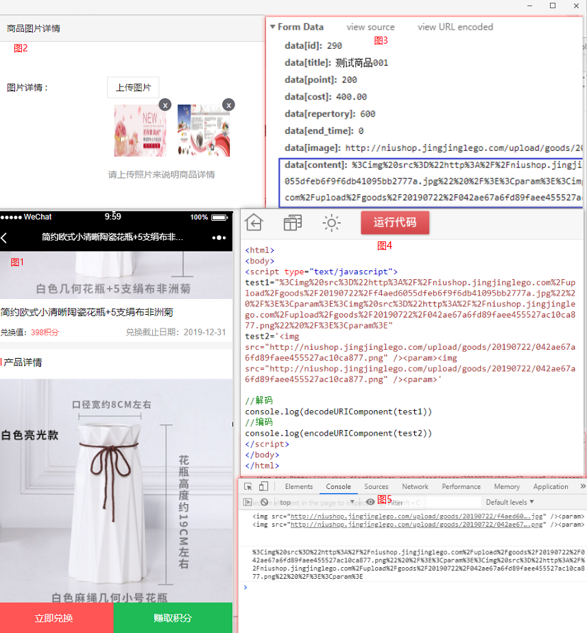

说，我有一个中间接手的需求，什么叫中间接手呢，就是这个功能已经上线了，并且已经产生数据了，现在要对这个功能进行修改，所以既要满足当下开发的需求，又要兼容以前的功能。简单说来，就是我们有一个后台添加商品的功能，之前是前端写的后台页面，这次进行了平台切换，所以是后端写的页面。于是对于数据，就有了些变化，具体如下：
一、老版实际情况
1、商品的添加，字段有商品的属性，包括名称、价格、积分这些就不说了，直接是一个input提交过来的，主要是商品详情，就是平时大家购物，往下滑动查看到的商品图文详情，例如下面图1。就是产品详情那一块，由后台添加多张规格相当的图片，然后首位拼接在一起，就类似我们经常看见的“长微信聊天截图一样”。查看前端代码，发现具体实现过程是：将每一张上传的图片的完整地址，再加上“<img src=”和“<param>”标签，然后拼接在一起，然后encodeURIComponent()进行编码，如图4Js代码：

2、现在功能是变更了平台，就是服务器换了，之前的资源地址，访问有效，但是不再继续添加，添加的新商品图片地址存在新的服务器里面。并且由后端对数据格式进行处理，为了保持访问端，就是客户访问端页面不做任何修改，所以提交的数据格式，还是保持如上不变，只是实现方式又后端实现。
二、新版PHP实现方式
1、前端在添加图片的时候，只用传多张图片的URL地址，数组格式。然后对这些URL资源地址进行拼接，然后写入数据库，代码如下：
$content_arr = [
'0' => '/upload/goods/20190722/f4aed6055dfeb6f9f6db41095bb2777a.jpg',
'1' => '/upload/goods/20190722/f4aed6055dfeb6f9f6db41095bb4578f.jpg',
'2' => '/upload/goods/20190722/f4aed6055dfeb6f9f6db41095bb2575e.jpg',
]
//定义一个商品详情
$content = '';
//对传过来的商品图片数组进行处理
foreach($content_arr as $k=>$v){
if(!$k){
//第一张为商品主图片
$info['image'] = request()->domain().$v;
}else {
//剩余为商品详情，进行拼接
$content .= '<img src='.'"'. request()->domain().$v.'"'.' /><param>';
}
}
//最后进行编码
$info['content'] = rawurlencode($content);
//最后得到就是$info['content'] = "%3Cimg%20src%3D%22http%3A%2F%2Fniushop.jingjinglego.com%2Fupload%2Fgoods%2F20190722%2Ff4aed6055dfeb6f9f6db41095bb2777a.jpg%22%20%2F%3E%3Cparam%3E%3Cimg%20src%3D%22http%3A%2F%2Fniushop.jingjinglego.com%2Fupload%2Fgoods%2F20190722%2F042ae67a6fd89faee455527ac10ca877.png%22%20%2F%3E%3Cparam%3E";2、后端展示，因为后端页面的展示有所变化，之前前端写的是直接获取原数据后进行解码，然后插入到页面里面，这次后端实现的方式是，对rawurlencode()编码后的数据进行还原，还原成传过来数组格式$content_arr一样：代码实现如下
$we7_set = new We7AdminSet();
//前端传来的商品id
$id = request()->get('id',0);
if($id){
$goods_info = $we7_set->getEidGoodsWay($id);
$content = rawurldecode($goods_info['content']);//对原数据进行解码
$content = str_replace("<img src=","",$content);//替换调标签字符
$content = str_replace("<param>", ",", $content);
$content = str_replace(" />", "", $content);
$content = str_replace('"', "", $content);
$content = str_replace(request()->domain().'/', "", $content);//替换掉域名前缀
$content = rtrim($content,",");//去除前后杂质
$content = explode(",", $content);//转成数组
$goods_info['image'] = str_replace(request()->domain().'/', "", $goods_info['image']);
array_unshift($content,$goods_info['image']);//将商品主图片追加进去
$goods_info['content'] = $content;
$this->assign("goods_info", $goods_info);//获取修改商品数据
}3、里面主要是用到编码rawurlencode()解码rawurldecode()方法，和字符替换str_replace(str,string)方法，还有往数组第一个位置添加一个元素array_unshift(array,value)的方法。
ps：本次主要是对字符串进行处理，总结就是，既要能按格式保存数据，又要能还原原来的数据格式，当然还要更好的方法，和实现过程，欢迎大家的评论留言，谢谢！